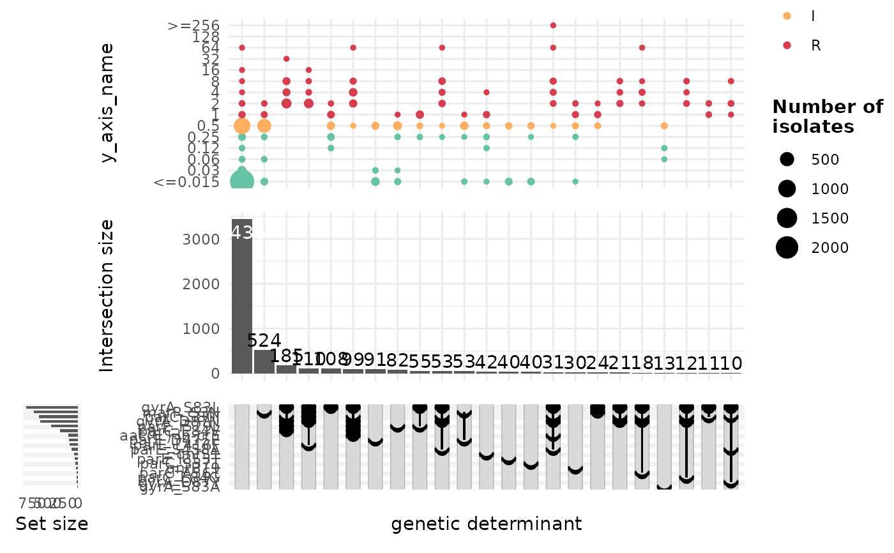

This function generates an Upset plot using a binary matrix of genetic determinants and antimicrobial resistance (AMR) data. Optionally, MIC or disk diffusion breakpoints can be overlaid on the plot.
Usage
amr_complexUpset(
binary_matrix,
min_set_size = 10,
mic_disk = "mic",
remove_NAs = TRUE,
gene_determinants = NULL,
colour_by = "pheno",
plot_breakpoints = FALSE,
organism = NULL,
break_guide = "EUCAST 2024",
break_type = "ECOFF",
drug = NULL,
colour_values = c(S = "#66c2a5", I = "#fdae61", R = "#d53e4f")
)Arguments
- binary_matrix
A binary matrix where rows represent samples and columns represent genetic determinants or phenotypic resistance data.
- min_set_size
The minimum size of a set to be included in the plot. Default is 10.
- mic_disk
A character string specifying whether to use 'mic' or 'disk' for the y-axis. Must be either
"mic"or"disk". Default is"mic".- remove_NAs
Logical. If
TRUE, removes rows with missing values in the selectedmic_diskcolumn. Default isTRUE.- gene_determinants
A character vector specifying which genetic determinants to include. If
NULL, all genes are used. Default isNULL.- colour_by
A character string specifying the column used for colour mapping in the plot. Default is
"pheno".- plot_breakpoints
Logical. If
TRUE, overlays MIC or disk diffusion breakpoints on the plot. Default isFALSE.- organism
A character string specifying the organism, used when plotting breakpoints.
- break_guide
A character string specifying the breakpoint guideline (e.g.,
"EUCAST 2024"). Default is"EUCAST 2024".- break_type
A character string specifying the breakpoint type (e.g.,
"ECOFF"). Default is"ECOFF".- drug
A character string specifying the antimicrobial agent to be analysed.
- colour_values
A named vector specifying colours for different resistance categories (
S,I,R). Default isc(S="#66c2a5", I="#fdae61", R="#d53e4f").
Examples
# Example usage:
cip_bin<- get_binary_matrix(import_amrfp(ecoli_geno_raw, "Name"),
ecoli_ast,
antibiotic="Ciprofloxacin",
drug_class_list=c("Quinolones"),
sir_col="pheno",
keep_assay_values=TRUE,
keep_assay_values_from = "mic"
)
#> [1] "converting ecoli_ast column `drug_agent` to class `ab`"
#> Input is already a dataframe.
#> Warning: There was 1 warning in `mutate()`.
#> ℹ In argument: `drug_agent = as.ab(drug_agent)`.
#> Caused by warning:
#> ! in as.ab(): these values could not be coerced to a valid antimicrobial
#> ID: "Kasugamycin".
#> [1] "Defining NWT using ecoff column provided: ecoff"
#> [1] "Some samples had multiple phenotype rows, taking the most resistant only"
#> Joining with `by = join_by(id)`
#> Joining with `by = join_by(id)`
#> Joining with `by = join_by(id)`
amr_complexUpset(cip_bin)
#> Warning: Removed 171 rows containing non-finite outside the scale range (`stat_sum()`).
